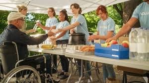

To unite diverse communities in building sustainable futures by promoting education, health, and environmental responsibility. Our mission is to create practical, grassroots projects that uplift families, empower youth, and inspire collective action—turning compassion into lasting change.
We believe action speaks louder than words. Here’s how we’re making a difference:
We provide free workshops, literacy classes, and tutoring for children and adults to bridge the education gap and empower individuals with skills for brighter futures.
Through tree planting campaigns, recycling initiatives, and community clean-ups, we inspire environmental stewardship and greener neighborhoods.
Our mentorship program connects young people with positive role models to develop leadership, career readiness, and life skills for future changemakers.
We organize food drives, community kitchens, and meal delivery services to ensure families have access to nutritious meals year-round.
From medical check-ups to mental health awareness events and community fitness programs, we prioritize holistic well-being in the communities we serve.
Hope Connect Foundation measures success through meaningful community participation, improved access to opportunities, stronger local partnerships, and practical outcomes from each programme. We will use project feedback and documented results to improve our initiatives over time.